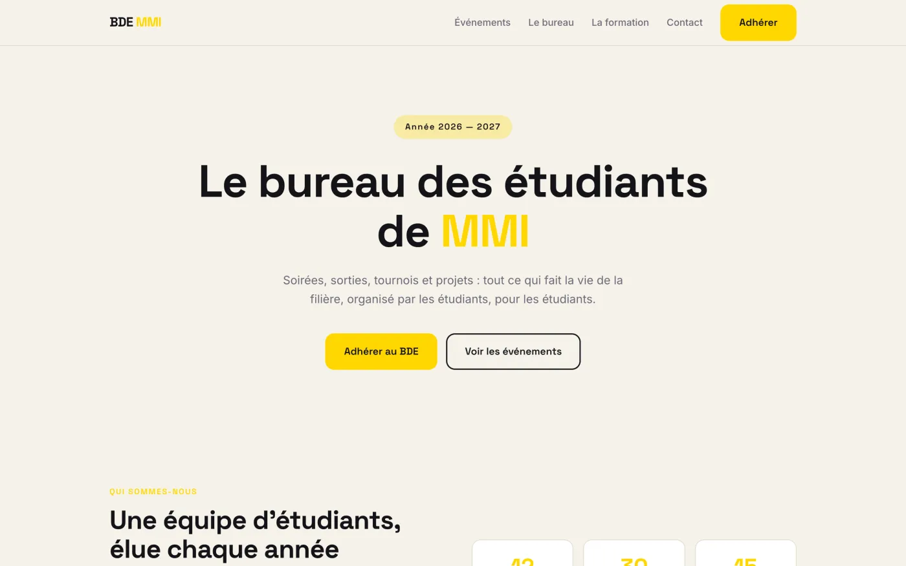
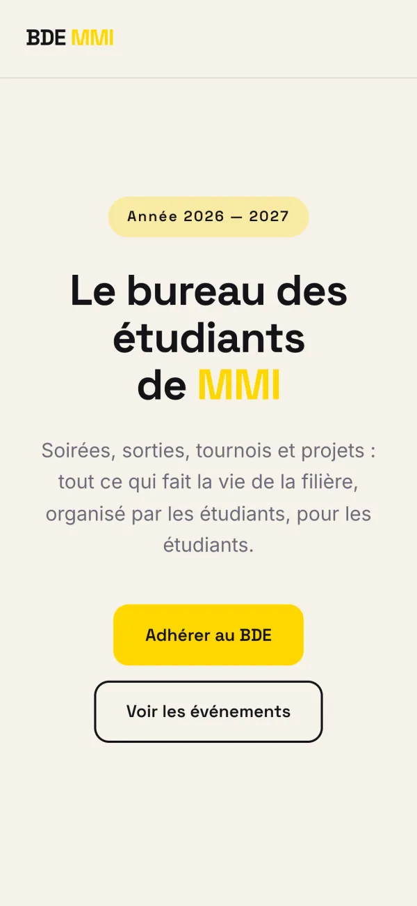
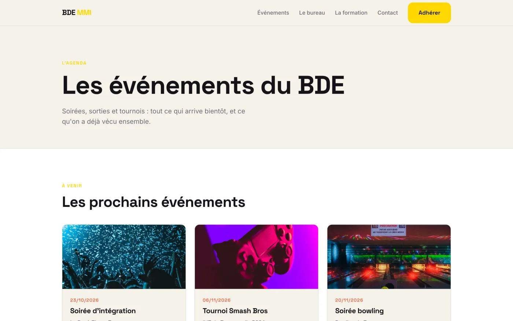
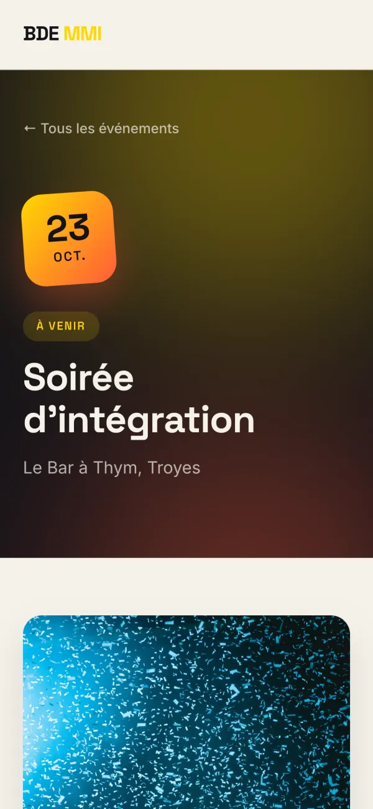
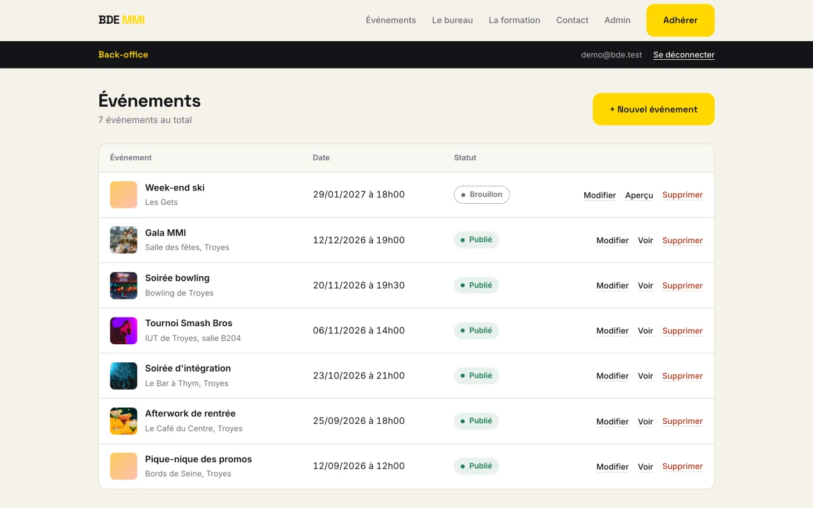
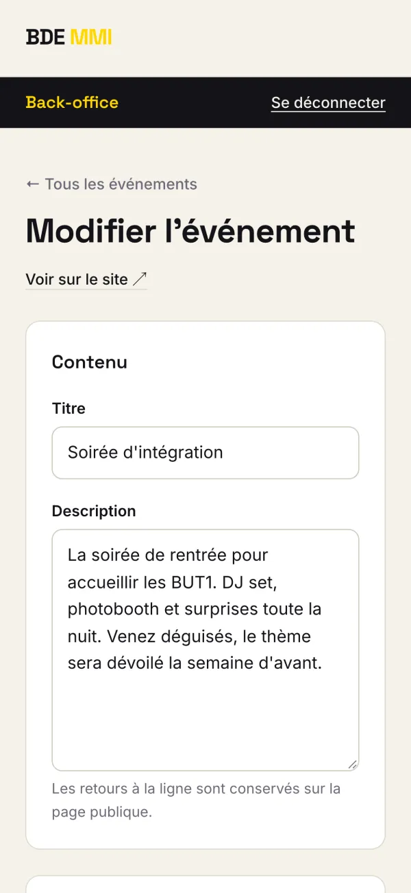
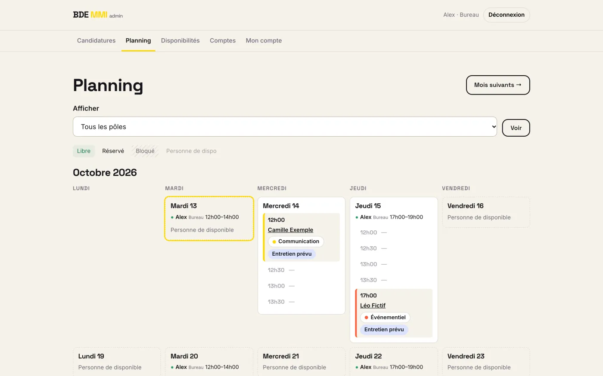
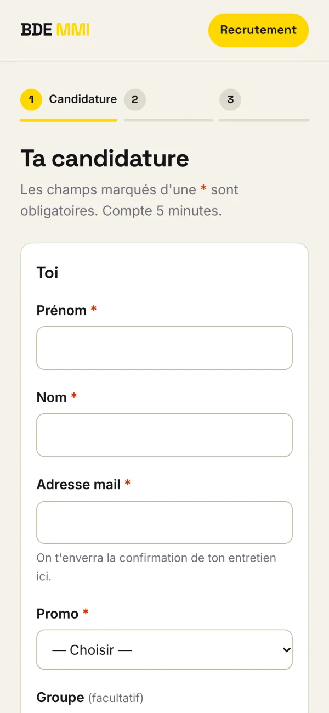

Le site du bureau des étudiants MMI de Troyes. Les événements, une page par soirée, un back-office pour que le bureau publie tout seul, et un module de recrutement. Codé en Symfony avec mon binôme, en trois semaines.

Le BDE avait besoin d'un endroit fixe pour ses événements. La date, le lieu, le prix adhérent et non adhérent, l'affiche, le lien de billetterie. Et surtout, le bureau devait pouvoir tout publier lui-même, sans attendre un développeur.
On l'a fait à deux. Mon binôme a monté la structure SCSS mobile-first, la mise en page de l'accueil, le module de recrutement et la mise en prod. Moi j'ai pris le cœur Symfony : l'entité Evenement, les listes à venir et passés, la page détail, le bloc des 3 prochains événements sur l'accueil, et tout le back-office (connexion admin, CRUD, upload des affiches).
Chaque page suit le même trajet. Symfony lit l'URL et trouve la route, déclarée juste au-dessus de la méthode du contrôleur. Le contrôleur demande les données au repository, qui écrit la requête avec le QueryBuilder de Doctrine. Ce qui revient, ce sont des objets Evenement, pas des lignes SQL.
Le contrôleur passe ces objets à un template Twig. Tous les templates héritent de base.html.twig, et la carte d'un événement vit dans un partial à part. Le module de recrutement de mon binôme est rangé dans son propre dossier, en PHP natif. Même site, deux codes séparés.
src/
├── Controller/
│ ├── AccueilController.php
│ ├── EvenementController.php
│ ├── SecurityController.php
│ └── Admin/EvenementAdminController.php
├── Entity/ Evenement, Utilisateur
├── Repository/ les requêtes Doctrine
├── Form/ EvenementType
└── Command/ créer un admin en ligne de commande
templates/
├── base.html.twig
├── accueil/ evenement/ admin/ security/
└── partials/_carte_evenement.html.twig
recrutement/ module PHP natif de mon binôme
tests/Controller/ 4 tests PHPUnitUne soirée sur plusieurs jours ne doit pas partir en archive dès le premier soir. COALESCE prend la date de fin si elle existe, sinon la date de début. Les brouillons sont filtrés dans la même requête.
public function trouverAVenir(): array
{
return $this->createQueryBuilder('e')
->andWhere('e.publie = true')
->andWhere('COALESCE(e.dateFin, e.dateDebut) >= :maintenant')
->setParameter('maintenant', new \DateTime())
->orderBy('e.dateDebut', 'ASC')
->getQuery()
->getResult();
}Le contrôleur ne reçoit pas un numéro mais directement un Evenement. Symfony le cherche en base et renvoie une 404 tout seul si l'id n'existe pas. Un brouillon donne aussi une 404 au public, mais un admin connecté peut le prévisualiser avant de le publier.
#[Route('/evenements/{id}', name: 'evenement_detail')]
public function detail(Evenement $evenement): Response
{
// Un brouillon reste invisible pour le public,
// mais un admin peut le prévisualiser
if (!$evenement->isPublie() && !$this->isGranted('ROLE_ADMIN')) {
throw $this->createNotFoundException('Événement non trouvé');
}
return $this->render('evenement/detail.html.twig', [
'evenement' => $evenement,
]);
}La suppression n'accepte que le POST, avec un jeton CSRF propre à chaque événement. Un lien piégé ou un simple GET tombe sur une erreur 405. Un des tests PHPUnit vérifie exactement ça.
#[Route('/{id}/supprimer', name: 'admin_evenement_supprimer',
requirements: ['id' => '\d+'], methods: ['POST'])]
public function supprimer(Evenement $evenement, Request $requete, ...): Response
{
// Le jeton CSRF envoyé par le formulaire de la liste doit être le bon
$jeton = $requete->getPayload()->getString('_token');
if (!$this->isCsrfTokenValid('supprimer' . $evenement->getId(), $jeton)) {
return $this->redirectToRoute('admin_evenement_liste');
}
$this->supprimerFichierAffiche($evenement->getAffiche());
$entityManager->remove($evenement);
$entityManager->flush();
// ...
}{id} sans contrainte accepte n'importe quel texte, donc une route peut en avaler une autre.{id} n'accepte que des chiffres (\d+). Une URL bizarre donne une 404 propre.COALESCE(e.dateFin, e.dateDebut) dans le QueryBuilder : la date de fin si elle existe, sinon le début.publie = true dans chaque requête publique, 404 sur la page détail sauf pour ROLE_ADMIN, et un test PHPUnit qui le vérifie.uniqid() et la vraie extension. basename() avant de supprimer un fichier.






Affiches de démo : photos Unsplash de Jordon Conner, Luis Villasmil, Ryan Ancill, Sandra Seitamaa et Laura Peruchi. Données fictives.
Le dépôt est privé, le site appartient à l'association. Je fais la démo et je montre le code en entretien ou en visio, avec plaisir.